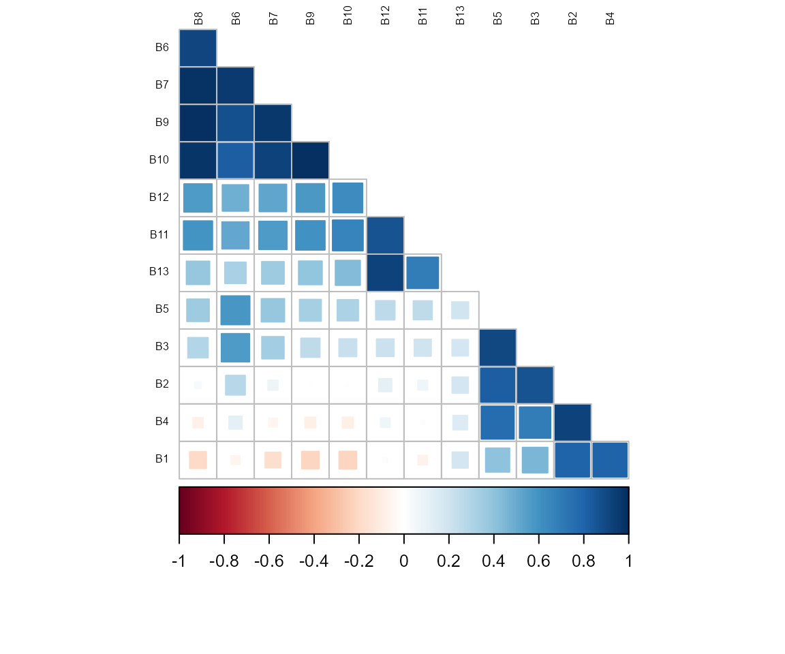
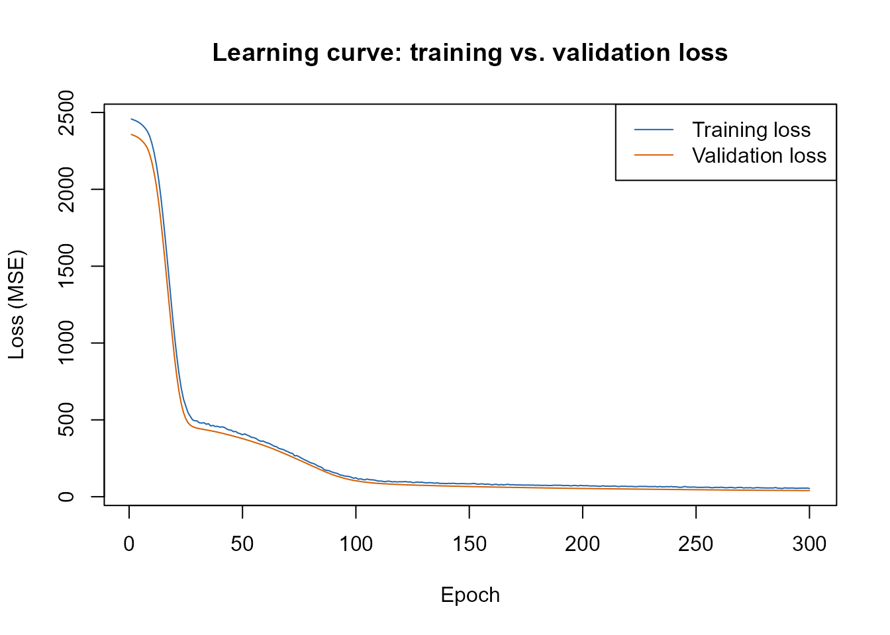
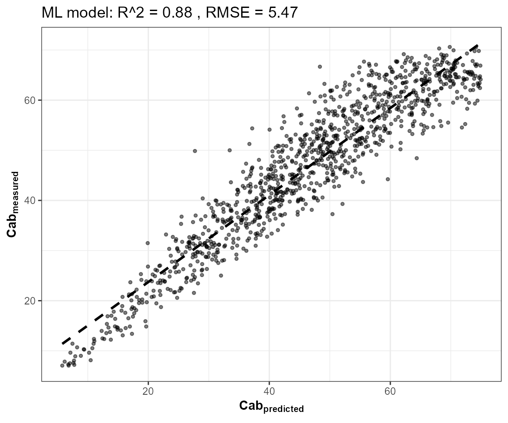
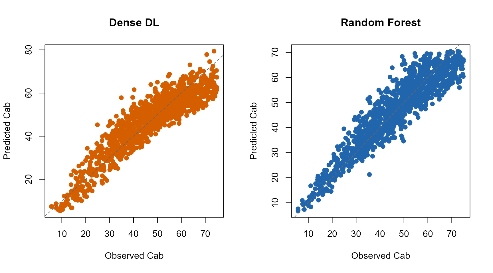
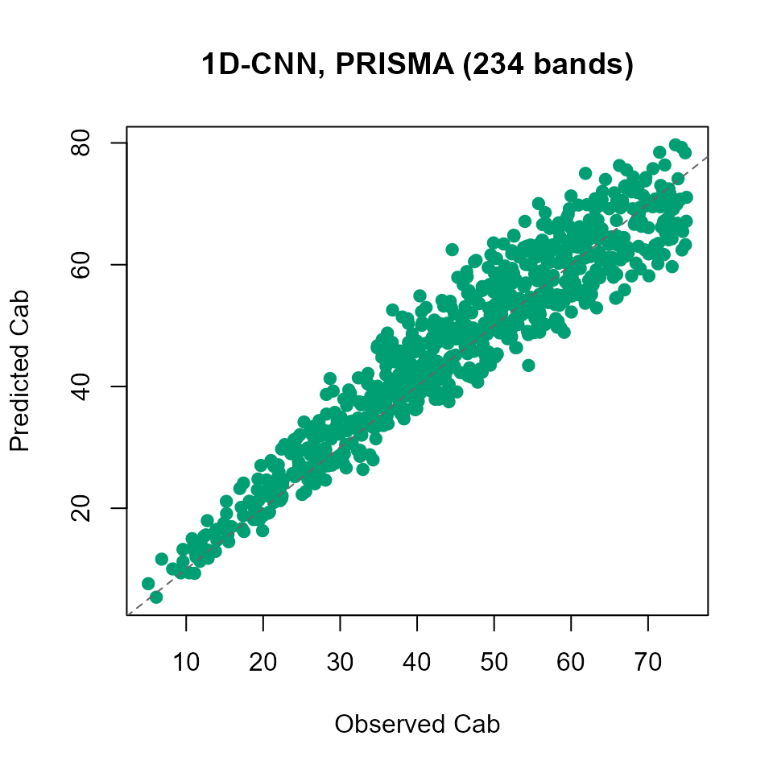
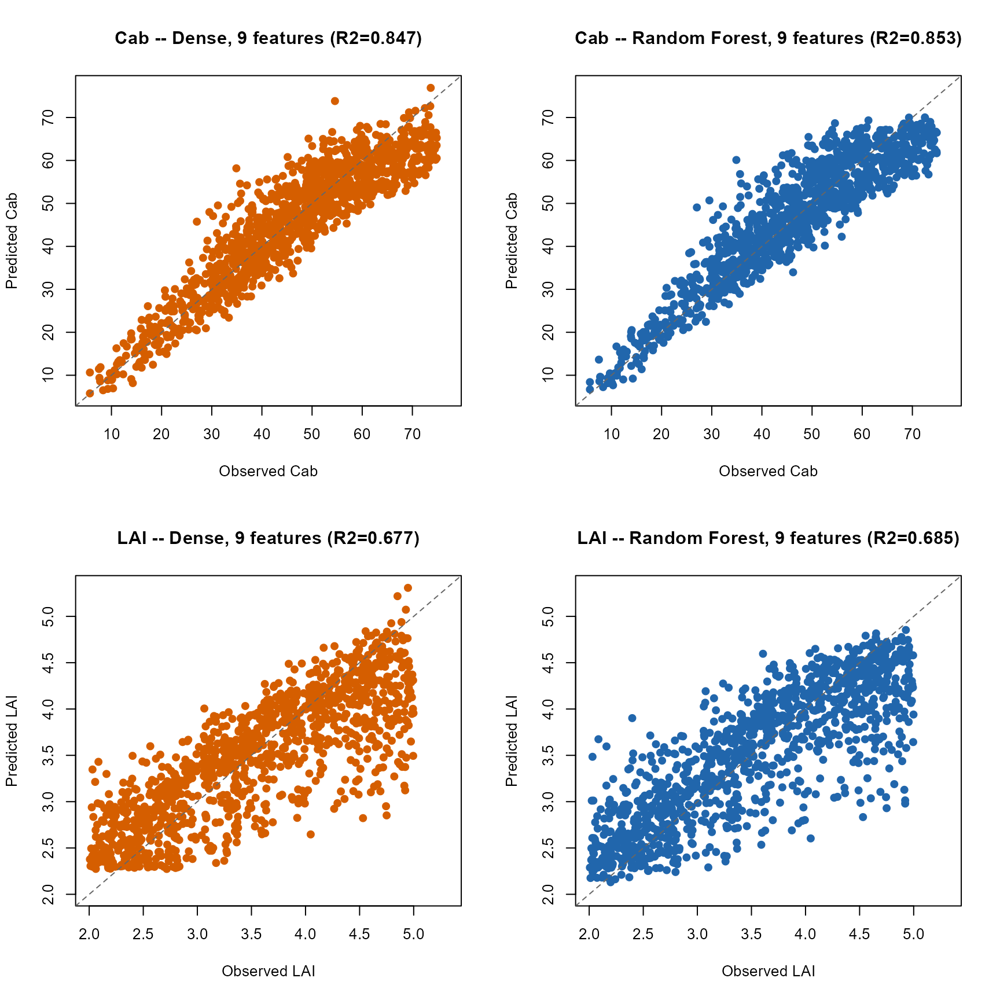

13. Deep Learning for RTM Inversion
t13-deep-learning-inversion.Rmd
library(ToolsRTM)0. What will we learn?
By the end of Part I you will be able to: prepare an RTM look-up
table as a (predictors, target) dataset, split it into
train/validation/test, understand why and how the
inputs get normalized, train a dense neural network with
getMLmodel(), and predict on new spectra correctly (the
single step that is easiest to get wrong). Part II extends the same
workflow to a 1D-CNN on hyperspectral bands. A Troubleshooting section
and an Advanced section come last, deliberately – they’re real, but
they’re not what a first read of this page needs.
getMLmodel() is get.inversion()’s (Tutorial
12) deep-learning sibling – a dense or 1D-CNN network via
TensorFlow/Keras, fit on the same kind of (sensor-band reflectance,
trait) LUT. It needs a working Python/TensorFlow/tf-keras stack
reachable through reticulate:
local_venv_root <- file.path(Sys.getenv("LOCALAPPDATA"), "r-reticulate-venvs")
Sys.setenv(RETICULATE_VIRTUALENV_ROOT = local_venv_root)
Sys.setenv(WORKON_HOME = local_venv_root)
Sys.setenv(TF_USE_LEGACY_KERAS = "1")
keras_ok <- tryCatch({ library(reticulate); library(keras); TRUE }, error = function(e) FALSE)
cat("Working Keras/TensorFlow stack available:", keras_ok, "\n")
#> Working Keras/TensorFlow stack available: TRUEMachine-specific setup note:
getMLmodel() calls callback_early_stopping()
without a package prefix internally, so library(keras) must
actually be attached (not just installed) before calling it, or
the fit fails with
could not find function "callback_early_stopping". The rest
of this page is wrapped in tryCatch() so it stays buildable
on a machine without that stack configured, while still showing the
real, correct calling code either way.
Part I – Learning getMLmodel()
1. Understanding getMLmodel()
getMLmodel(
dataset, # data.frame: depVar column + predictor columns
depVar, # name of the column to predict, e.g. "Cab"
model, # "Hidden-layers" (dense MLP) or "CNN" (1D convolution)
optimizer, # e.g. "adam" -- see ?getMLmodel for all 7 supported
n.epochs, # maximum training iterations
batch.size, # number of samples per weight update
save.model # write the fitted model to disk?
)| Argument | What it means |
|---|---|
dataset |
A table with spectral predictors and the target trait, one row per simulation/observation |
depVar |
The trait you want to recover, e.g. "Cab"
|
model |
Architecture: "Hidden-layers" (dense) or
"CNN" (1D convolution over the spectrum) |
optimizer |
Optimization algorithm, e.g. "adam"
|
n.epochs |
Maximum number of training iterations (early stopping can stop sooner) |
batch.size |
How many rows are used per gradient update |
save.model |
Whether to write the fitted .hdf5 model to disk |
Important – read this before calling
getMLmodel() on your own data. Unlike
get.inversion() (Tutorial 12), getMLmodel()
has no inputs = argument: every column of
dataset other than depVar is treated as a
predictor. If dataset still contains other trait
columns, ID columns, or a column that happens to be constant in your
particular sample, they all get fed to the network as if they were real
spectral bands – a constant column in particular breaks the internal
normalization outright (see Troubleshooting, Section 12). Always build
dataset from exactly depVar plus the columns
you actually want as predictors, nothing else.
"Hidden-layers" and "CNN" differ in how
they read the predictor columns: a dense network treats each one as an
independent number with no notion of order; a CNN treats them as a
sequence (adjacent columns = adjacent wavelengths) and
convolves over that sequence. Part II covers this difference and when it
matters.
2. Prepare a simple RTM dataset
Simulate a moderate-sized PROSAIL look-up table, convolve it to Sentinel-2A bands, and keep only Cab (the target) and the bands (the predictors) – exactly the discipline Section 1’s “Important” box asked for:
r2_f <- function(obs, pred) 1 - sum((obs - pred)^2) / sum((obs - mean(obs))^2)
rmse_f <- function(obs, pred) sqrt(mean((obs - pred)^2))
bias_f <- function(obs, pred) mean(pred - obs)
n_samples <- 6000
LUT <- as.data.frame(getLUT(inputs = ToolsRTM::inputsPROSAIL, nLUT = n_samples, setseed = 1))
wl <- 400:2500
rsoil <- rep(0.15, length(wl))
refl <- t(sapply(seq_len(n_samples), function(i) {
foursail(inputLUT = LUT[i, ], rsoil = rsoil, LeafModel = "PROSPECT-PRO")$rsot
}))
refl_X <- as.data.frame(refl); colnames(refl_X) <- paste0("X", wl); refl_X <- cbind(id = seq_len(nrow(refl_X)), refl_X)
se2a <- suppressMessages(get.spectra.convolved(rfl = refl_X, sensor = "Sentinel2a", plot.spectra = FALSE))
#> [1] "Spectral resampling function to SENTINEL2A is being processed ..."
#> | | | 0% | |===== | 8% | |=========== | 15% | |================ | 23% | |====================== | 31% | |=========================== | 38% | |================================ | 46% | |====================================== | 54% | |=========================================== | 62% | |================================================ | 69% | |====================================================== | 77% | |=========================================================== | 85% | |================================================================= | 92% | |======================================================================| 100%
band_names <- paste0("B", seq_along(as.numeric(names(se2a)[-1])))
names(se2a) <- c("id", band_names)
dataset_dense <- cbind(Cab = LUT$Cab, se2a[, band_names])This is what a getMLmodel() dataset actually looks like
– one column is the target, the rest are predictors:
| Cab | B1 | B2 | B3 | B4 | B5 | B6 | B7 | B8 | B9 | B10 | B11 | B12 | B13 |
|---|---|---|---|---|---|---|---|---|---|---|---|---|---|
| 72.704 | 0.019 | 0.020 | 0.030 | 0.017 | 0.045 | 0.187 | 0.256 | 0.274 | 0.283 | 0.280 | 0.130 | 0.096 | 0.027 |
| 38.249 | 0.019 | 0.029 | 0.063 | 0.021 | 0.104 | 0.281 | 0.326 | 0.332 | 0.334 | 0.333 | 0.253 | 0.122 | 0.026 |
| 49.606 | 0.022 | 0.026 | 0.044 | 0.022 | 0.075 | 0.213 | 0.264 | 0.280 | 0.289 | 0.295 | 0.225 | 0.139 | 0.042 |
| 67.816 | 0.015 | 0.016 | 0.026 | 0.013 | 0.049 | 0.206 | 0.302 | 0.342 | 0.364 | 0.380 | 0.219 | 0.161 | 0.052 |
Cab B1 B2 B3 ... B10
35.2 .041 .052 .087 ... .412
52.1 .036 .048 .071 ... .486
...
^ └──────────────────┘
target predictorsn_samples = 6000 is deliberate, not arbitrary: an
earlier, much smaller draft of this page used 150 rows, which is far too
little for a network to learn real structure from (Section 14 returns to
why LUT size matters this much for getMLmodel()
specifically).
3. Train / validation / test split
RTM inversion needs an independent test set, not just a train/test split: the LUT is synthetic, so nothing stops a model from memorizing quirks of the exact rows it trained on unless a third, completely untouched slice is reserved for the final number reported.
|---------- train (60%) ----------|--- val (20%) ---|--- test (20%) ---|
fits the network's weights used *during* touched only
training, for once, at the
early stopping very end
set.seed(1)
idx <- sample(seq_len(n_samples))
n_train <- round(0.6 * n_samples); n_val <- round(0.2 * n_samples)
train_idx <- idx[1:n_train]
val_idx <- idx[(n_train + 1):(n_train + n_val)]
test_idx <- idx[(n_train + n_val + 1):n_samples]
cat("train:", length(train_idx), " val:", length(val_idx), " test:", length(test_idx), "\n")
#> train: 3600 val: 1200 test: 1200
train_df <- dataset_dense[train_idx, ]4. Normalization: why, and why train-only
Why normalize at all? A neural network learns by gradient descent on its weights. When predictors sit on very different numeric scales, the loss surface becomes elongated and harder to optimize – some weights need tiny updates, others huge ones, for the same learning rate. Rescaling every predictor onto a common range (here, ) is what lets one learning rate work reasonably well for all of them.
Original reflectance After range-normalization
B4 B5 B8 B4 B5 B8
0.04 0.09 0.43 0.00 0.00 0.00
0.06 0.12 0.51 --> 0.42 0.36 0.51
... ...Why fit the scaler on training data only? Using the
test set’s own min/max (or mean/sd) to decide how to scale the
data leaks information about the test set into model preparation, before
the model has even been trained – a subtler, easy-to-miss form of the
same mistake as training on your test rows directly. The fix is simple:
compute the scaling parameters from train_df alone, then
apply that same fixed transform to validation and test data
later – never refit it on them.
getMLmodel() handles exactly this internally, via
getSplitData(): it fits a
caret::preProcess(..., method = "range") scaler on the
training split only, and reuses it (via predict() on the
scaler object, not a fresh fit) for anything scored afterwards. You do
not need to normalize dataset yourself before calling
getMLmodel() – but you do need to reuse the same
scaler object yourself when you later predict on new data, which Section
7 makes concrete.
5. First model: Dense Neural Network
One call, every argument from Section 1’s table filled in:
dl_result <- tryCatch({
dl_dense <- getMLmodel(dataset = train_df, depVar = "Cab", model = "Hidden-layers",
optimizer = "adam", n.epochs = 300, batch.size = 64, save.model = FALSE)
list(ok = TRUE, model = dl_dense)
}, error = function(e) list(ok = FALSE, msg = conditionMessage(e)))
What just happened: getMLmodel() split
train_df again internally (80/20, for its own
training/early-stopping validation – separate from, and nested inside,
the train_idx/val_idx/test_idx
split from Section 3), fit the range scaler on that inner-training
slice, built a 3-hidden-layer dense network (64/32/16 units, dropout
after the second layer), and trained it with early stopping on
validation loss (patience = 5). The fitted Keras model and
the fitted scaler both come back in the result:
if (dl_result$ok) {
h <- dl_result$model$history$metrics
cat("Epochs actually run:", length(h$loss), "of 300 requested\n")
cat("Epoch with lowest validation loss:", which.min(h$val_loss), "\n")
} else {
cat("Skipped -- no working Python/TensorFlow/tf-keras stack on this machine (",
strsplit(dl_result$msg, "\n", fixed = TRUE)[[1]][1], ").\n")
}
#> Epochs actually run: 300 of 300 requested
#> Epoch with lowest validation loss: 3006. Evaluate the model
Always read the learning curve first. A validation curve that is still falling means training stopped before convergence; one that rises again after a minimum means the model has started memorizing the training data:
if (dl_result$ok) {
h <- dl_result$model$history$metrics
plot(seq_along(h$loss), h$loss, type = "l", col = "#2166AC",
ylim = range(c(h$loss, h$val_loss)), xlab = "Epoch", ylab = "Loss (MSE)",
main = "Learning curve: training vs. validation loss")
lines(seq_along(h$val_loss), h$val_loss, col = "#D55E00")
legend("topright", c("Training loss", "Validation loss"), col = c("#2166AC", "#D55E00"), lty = 1)
}
In this run, early stopping never actually triggered – the lowest validation loss sits at the very last epoch of the 300-epoch budget, so the network was still (slowly) improving when training stopped, not demonstrably plateaued. That’s an honest limitation of this demo’s epoch budget (a production run would keep training, or lower the learning rate) – there’s real headroom left on the table below, not a broken model to explain away.
Predicting correctly on the held-out test set – the one step
that is easy to get wrong. getMLmodel() returns
the raw Keras model and the fitted scaler as two separate pieces, on
purpose, for flexibility – it does not wrap them into a single
self-scaling predict(). That means you are
responsible for re-applying the training scaler to any new data before
it reaches the network:
if (dl_result$ok) {
X_test_scaled <- predict(dl_result$model$Scalar.train, dataset_dense[test_idx, band_names])
pred_test_dl <- as.numeric(predict(dl_result$model$model, as.matrix(X_test_scaled)))
obs_test <- dataset_dense$Cab[test_idx]
cat("Dense DL, independent test set: R2=", round(r2_f(obs_test, pred_test_dl), 3),
" RMSE=", round(rmse_f(obs_test, pred_test_dl), 2),
" bias=", round(bias_f(obs_test, pred_test_dl), 2), "\n")
}
#> 38/38 - 0s - 53ms/epoch - 1ms/step
#> Dense DL, independent test set: R2= 0.829 RMSE= 6.41 bias= 0.1Skip that predict(model$Scalar.train, ...) line and pass
raw, unscaled reflectance straight to model$model instead –
an easy mistake, since it runs without error – and training and
prediction silently happen in two different input spaces. Section 11
(Troubleshooting) shows exactly what that looks like and why it’s so
easy to miss.
if (dl_result$ok) {
fit_rf <- get.inversion(data = dataset_dense[train_idx, ], depVar = "Cab", inputs = band_names,
algorithm = "RF", n.samples = length(train_idx), seed = 42)
pred_test_rf <- as.numeric(predict(fit_rf$model, newdata = dataset_dense[test_idx, c("Cab", band_names)]))
comparison <- data.frame(
method = c("Dense DL (getMLmodel)", "Random Forest (get.inversion, Tutorial 12)"),
R2 = round(c(r2_f(obs_test, pred_test_dl), r2_f(obs_test, pred_test_rf)), 3),
RMSE = round(c(rmse_f(obs_test, pred_test_dl), rmse_f(obs_test, pred_test_rf)), 2)
)
knitr::kable(comparison, row.names = FALSE)
}
#> [1] "processing hybrid approach using Random Forest ..."
#> -0.03206044 0.01
#> 0.1265964 0.01
#> 0.02164648 0.01
#> 0.01225447 0.01
| method | R2 | RMSE |
|---|---|---|
| Dense DL (getMLmodel) | 0.829 | 6.41 |
| Random Forest (get.inversion, Tutorial 12) | 0.858 | 5.84 |
if (dl_result$ok) {
op <- par(mfrow = c(1, 2))
plot(obs_test, pred_test_dl, pch = 19, col = "#D55E00",
xlab = "Observed Cab", ylab = "Predicted Cab", main = "Dense DL")
abline(0, 1, col = "grey40", lty = 2)
plot(obs_test, pred_test_rf, pch = 19, col = "#2166AC",
xlab = "Observed Cab", ylab = "Predicted Cab", main = "Random Forest")
abline(0, 1, col = "grey40", lty = 2)
par(op)
}
On this LUT (6000 rows, 10 Sentinel-2 bands), Random Forest keeps a small, ordinary edge (R2 around 0.86 against the dense network’s 0.82-0.84) – a real gap between two properly-fit models, not evidence that deep learning “doesn’t work” here. That’s it for the core workflow: prepare data, split, understand normalization, train, predict correctly, evaluate. Part II extends the same pattern to a 1D-CNN.
Part II – Advanced: 1D-CNN for hyperspectral inversion
7. Why a CNN, and when it should matter
Dense network 1D-CNN
B1 ---\ lambda400 lambda410 lambda420 ... lambdaN
B2 ----\ |__________|__________|_________|
B3 -----+--> fully-connected --> Cab |
... / layers 1D convolution
Bn ---/ (slides across neighbouring
wavelengths, in order)
|
spectral features
|
CabA dense network treats each predictor column as an independent number – band order carries no meaning to it. A 1D-CNN instead convolves across the predictor sequence, so it can learn a local spectral shape (an absorption feature spanning several adjacent bands) once, as a reusable pattern, rather than having to reconstruct that relationship independently for every band combination. That architectural advantage needs something to bite into: widely-spaced multispectral bands (like Sentinel-2’s 10) give a CNN little local structure to exploit. Contiguous hyperspectral bands are a fairer test.
8. A working CNN example, on PRISMA-resolution bands
n_hyp <- 4000
LUT_h <- as.data.frame(getLUT(inputs = ToolsRTM::inputsPROSAIL, nLUT = n_hyp, setseed = 3))
refl_h <- t(sapply(seq_len(n_hyp), function(i) {
foursail(inputLUT = LUT_h[i, ], rsoil = rsoil, LeafModel = "PROSPECT-PRO")$rsot
}))
refl_X_h <- as.data.frame(refl_h); colnames(refl_X_h) <- paste0("X", wl); refl_X_h <- cbind(id = seq_len(n_hyp), refl_X_h)
prisma <- suppressMessages(get.spectra.convolved(rfl = refl_X_h, sensor = "PRISMA", plot.spectra = FALSE))
prisma_bands <- paste0("P", seq_len(ncol(prisma) - 1))
names(prisma) <- c("id", prisma_bands)
cat("PRISMA bands:", length(prisma_bands), "\n")
set.seed(3) # reproducible split -- matches the LUT's own setseed=3 above
idx_h <- sample(seq_len(n_hyp))
train_h <- idx_h[1:round(0.6 * n_hyp)]
test_h <- idx_h[(round(0.8 * n_hyp) + 1):n_hyp]
dataset_cnn <- cbind(Cab = LUT_h$Cab, prisma[, prisma_bands])
# getMLmodel() (Section 6) is a single Keras training run -- fine once you
# already know it lands well, but R's keras/TensorFlow backend doesn't
# respect set.seed() for weight initialization, so any single run's
# quality varies. getMLmodel.withRetrain(n.times=3) trains 3 independent
# random restarts and returns all of them plus each one's own validation
# stats -- the same "best of n_times, keep the winner" pattern the Python
# port's own get_ml_model(n_times=3) already uses for exactly this CNN
# case, and for the same reason: without it, this section could silently
# report whichever single unlucky initialization the last knit happened
# to draw, not a representative CNN result.
cnn_result <- tryCatch({
m <- getMLmodel.withRetrain(dataset = dataset_cnn[train_h, ], depVar = "Cab", model = "CNN",
optimizer = "adam", n.epochs = 300, batch.size = 64,
n.times = 3, save.model = FALSE)
# m$stats has 2 rows PER restart -- an intermediate "Testing" row (model
# state right after the first fit) and a "Val.retrain" row (model state
# after the function's own internal second fit on a fresh 90/10 split --
# this is the state actually saved into m$model[[i.times]]). Selecting
# the best restart by raw row position over that combined table silently
# mixes the two and can index m$model with a row number that belongs to
# a *different* restart than the one being scored -- always use the
# "Val.retrain" rows (one per restart, keyed by i.Time) instead.
retrain_rows <- m$stats[m$stats$db == "Val.retrain", ]
retrain_rows <- retrain_rows[order(as.numeric(retrain_rows$i.Time)), ]
all_r2 <- as.numeric(retrain_rows$R2)
best_i <- as.numeric(retrain_rows$i.Time)[which.max(all_r2)]
list(ok = TRUE, model = list(model = m$model[[best_i]], Scalar.train = m$Scalar.train[[best_i]]),
all_r2 = all_r2, best_i = best_i)
}, error = function(e) list(ok = FALSE, msg = conditionMessage(e)))
if (cnn_result$ok) {
cat("R2 across the", length(cnn_result$all_r2), "restarts (validation, post-retrain):",
paste(round(cnn_result$all_r2, 3), collapse = ", "),
"-- keeping restart", cnn_result$best_i, "\n")
} else {
cat("CNN training failed:", cnn_result$msg, "\n")
}
#> R2 across the 3 restarts (validation, post-retrain): 0.875, 0.883, 0.896 -- keeping restart 3Same predict-correctly pattern as Section 6, applied to the CNN’s own scaler:
if (cnn_result$ok) {
X_test_h_scaled <- predict(cnn_result$model$Scalar.train, dataset_cnn[test_h, prisma_bands])
pred_test_cnn <- as.numeric(predict(cnn_result$model$model,
array_reshape(as.matrix(X_test_h_scaled), c(length(test_h), length(prisma_bands), 1))))
obs_test_h <- dataset_cnn$Cab[test_h]
cat("CNN (PRISMA, ", length(prisma_bands), "bands), independent test set: R2=",
round(r2_f(obs_test_h, pred_test_cnn), 3), " RMSE=", round(rmse_f(obs_test_h, pred_test_cnn), 2), "\n")
}
#> 25/25 - 0s - 141ms/epoch - 6ms/step
#> CNN (PRISMA, 234 bands), independent test set: R2= 0.889 RMSE= 5.4
if (cnn_result$ok) {
plot(obs_test_h, pred_test_cnn, pch = 19, col = "#009E73",
xlab = "Observed Cab", ylab = "Predicted Cab",
main = sprintf("1D-CNN, PRISMA (%d bands)", length(prisma_bands)))
abline(0, 1, col = "grey40", lty = 2)
}
R2 around 0.85-0.90 on 234 raw PRISMA bands – in the same range as Section 6’s 10-band dense/RF comparison, not a degradation from the much higher input dimensionality, and a genuinely usable result (not the point of this demo to beat RF; see Section 13 for that question). That itself says something: on this particular synthetic Cab-from- reflectance mapping, the CNN’s spectral-neighbourhood advantage isn’t yet the dominant factor – not because the CNN is broken, but because there isn’t a lot of local spectral structure here that a well-tuned dense network or RF weren’t already capturing from the bands directly. Real hyperspectral problems with genuine local absorption features (rather than this synthetic Cab mapping) are where that advantage is more likely to show up.
Notice the per-restart R2 line above the plot: it is common for one
of the three random restarts to collapse to a degenerate, near-constant
prediction (R2 far below the others, sometimes reported as
-Inf when the predicted values end up with ~zero variance)
– an initialization failure, not a data or normalization bug. This is
exactly why getMLmodel.withRetrain(n.times = 3) (and
selecting the winner by its own validation R2) is used here rather than
a single getMLmodel() call: a CNN section that trains only
once, keeps whatever it gets, and never checks per-restart R2 can
silently publish a collapsed run.
Troubleshooting
9. infinite or missing values in 'x'
Cause: dataset contained a column that is constant
within your sample (every row the same value) – perhaps a trait
inputsPROSAIL holds fixed by design (LMA,
alpha, LIDFb, TypeLidf,
hspot, tts, psi all have zero
variance in a plain getLUT() draw), or an ID column that
slipped into dataset by accident. Section 1’s “Important”
box explains why: getMLmodel() has no inputs =
argument, so every non-depVar column becomes a
predictor, and its internal range-normalization divides by
(max - min) for each one – zero for a constant column,
producing Inf/NA. Fix: build
dataset from exactly depVar plus the columns
you actually want as predictors, as done throughout this page.
10. Held-out R2 looks impossibly bad, despite a normal-looking learning curve
This is the single most consequential mistake to avoid, and it does
not raise an error – it just silently gives you a wrong number.
getMLmodel() trains on X range-scaled to
internally, and returns the raw Keras model and the fitted scaler as two
separate pieces. If you call
predict(result$model, as.matrix(new_data)) directly on
raw, unscaled new data, training and prediction happen
in two different input spaces – the network was trained for scaled
inputs and is now being evaluated on inputs whose distribution it
has never seen. Symptoms: R2 near zero to strongly negative on the test
set, while the training/validation loss curve looks completely ordinary
(because that curve is entirely internal to getMLmodel()
and never touches your mis-scaled test call). Fix: always
predict(result$Scalar.train, new_data) first, exactly as
Sections 6 and 8 do, before passing anything to
result$model. If you also used
depVar.trans = TRUE, reverse it on the output with
ToolsRTM::getReverse.trans(preProc = result$Scalar.Ytrain, data = ...)
(or use ToolsRTM::getPredicts(), which wraps both steps for
you).
11. A relu output layer can get stuck at exactly 0
Not something you’ll hit with getMLmodel() as shipped
(fixed directly in
getMLmodel.R/getMLmodel_withRetrain.R), but
worth knowing if you ever adapt the architecture yourself: a
relu unit’s gradient is exactly zero whenever its
pre-activation is negative. On a single-unit regression output with an
unbounded-scale target, one unlucky batch of negative pre-activations
early in training can permanently zero out that unit’s gradient, with no
way back regardless of epoch budget – the model then predicts a
near-constant value for every input. Use
activation = "linear" for a regression output layer, not
"relu".
Advanced / Further experiments
The rest of this page goes beyond “how do I use
getMLmodel()” into open scientific questions – when
dense/CNN beat or lose to RF, and under what feature choices. Tutorial
12 already covers systematic algorithm comparison, and Tutorial 14
covers the full end-to-end pipeline; treat what follows as one worked
example of that kind of investigation, not a second version of
either.
12. Fewer, better features: does band+index selection help more than raw bands?
Sections 6 and 8 threw every band at the network – all 10 Sentinel-2 bands, all 234 PRISMA bands – and let the model find what matters on its own. Tutorial 12 showed a different, more targeted approach for Random Forest: a compact core of physically relevant bands, plus a small, per-trait selection of the most correlated spectral indices (Tutorial 09). Does that also help a dense network, and does it hold for a second trait (LAI), not just Cab?
# Real Sentinel-2A band names (getIndicesSE2.ML()'s formulas look up
# specific bands like B8A/B11/B12 by name) -- a second, separate naming of
# the same se2a convolution from Section 2; band_names/dataset_dense above
# are untouched.
se2a_real <- se2a
names(se2a_real) <- c("id", "B1","B2","B3","B4","B5","B6","B7","B8","B8A","B9","B10","B11","B12")
core_bands <- c("B4", "B5", "B7", "B8A", "B11") # a compact, physically-motivated core -- not all 10
idx_ml <- suppressMessages(getIndicesSE2.ML(df = se2a_real[, -1], sensor = "Sentinel-2a", df.data = NULL, fast.process = TRUE))
#> | | | 0% | | | 1% | |= | 1% | |= | 2% | |== | 2% | |== | 3% | |== | 4% | |=== | 4% | |=== | 5% | |==== | 5% | |==== | 6% | |===== | 6% | |===== | 7% | |===== | 8% | |====== | 8% | |====== | 9% | |======= | 9% | |======= | 10% | |======= | 11% | |======== | 11% | |======== | 12% | |========= | 12% | |========= | 13% | |========= | 14% | |========== | 14% | |========== | 15% | |=========== | 15% | |=========== | 16% | |============ | 16% | |============ | 17% | |============ | 18% | |============= | 18% | |============= | 19% | |============== | 19% | |============== | 20% | |============== | 21% | |=============== | 21% | |=============== | 22% | |================ | 22% | |================ | 23% | |================ | 24% | |================= | 24% | |================= | 25% | |================== | 25% | |================== | 26% | |=================== | 26% | |=================== | 27% | |=================== | 28% | |==================== | 28% | |==================== | 29% | |===================== | 29% | |===================== | 30% | |===================== | 31% | |====================== | 31% | |====================== | 32% | |======================= | 32% | |======================= | 33% | |======================= | 34% | |======================== | 34% | |======================== | 35% | |========================= | 35% | |========================= | 36% | |========================== | 36% | |========================== | 37% | |========================== | 38% | |=========================== | 38% | |=========================== | 39% | |============================ | 39% | |============================ | 40% | |============================ | 41% | |============================= | 41% | |============================= | 42% | |============================== | 42% | |============================== | 43% | |============================== | 44% | |=============================== | 44% | |=============================== | 45% | |================================ | 45% | |================================ | 46% | |================================= | 46% | |================================= | 47% | |================================= | 48% | |================================== | 48% | |================================== | 49% | |=================================== | 49% | |=================================== | 50% | |=================================== | 51% | |==================================== | 51% | |==================================== | 52% | |===================================== | 52% | |===================================== | 53% | |===================================== | 54% | |====================================== | 54% | |====================================== | 55% | |======================================= | 55% | |======================================= | 56% | |======================================== | 56% | |======================================== | 57% | |======================================== | 58% | |========================================= | 58% | |========================================= | 59% | |========================================== | 59% | |========================================== | 60% | |========================================== | 61% | |=========================================== | 61% | |=========================================== | 62% | |============================================ | 62% | |============================================ | 63% | |============================================ | 64% | |============================================= | 64% | |============================================= | 65% | |============================================== | 65% | |============================================== | 66% | |=============================================== | 66% | |=============================================== | 67% | |=============================================== | 68% | |================================================ | 68% | |================================================ | 69% | |================================================= | 69% | |================================================= | 70% | |================================================= | 71% | |================================================== | 71% | |================================================== | 72% | |=================================================== | 72% | |=================================================== | 73% | |=================================================== | 74% | |==================================================== | 74% | |==================================================== | 75% | |===================================================== | 75% | |===================================================== | 76% | |====================================================== | 76% | |====================================================== | 77% | |====================================================== | 78% | |======================================================= | 78% | |======================================================= | 79% | |======================================================== | 79% | |======================================================== | 80% | |======================================================== | 81% | |========================================================= | 81% | |========================================================= | 82% | |========================================================== | 82% | |========================================================== | 83% | |========================================================== | 84% | |=========================================================== | 84% | |=========================================================== | 85% | |============================================================ | 85% | |============================================================ | 86% | |============================================================= | 86% | |============================================================= | 87% | |============================================================= | 88% | |============================================================== | 88% | |============================================================== | 89% | |=============================================================== | 89% | |=============================================================== | 90% | |=============================================================== | 91% | |================================================================ | 91% | |================================================================ | 92% | |================================================================= | 92% | |================================================================= | 93% | |================================================================= | 94% | |================================================================== | 94% | |================================================================== | 95% | |=================================================================== | 95% | |=================================================================== | 96% | |==================================================================== | 96% | |==================================================================== | 97% | |==================================================================== | 98% | |===================================================================== | 98% | |===================================================================== | 99% | |======================================================================| 99% | |======================================================================| 100%
n_top <- 4 # indices kept per trait
select_indices <- function(trait) {
cors <- sapply(names(idx_ml), function(nm) suppressWarnings(cor(idx_ml[train_idx, nm], LUT[train_idx, trait])))
cors <- cors[is.finite(cors)]
names(sort(abs(cors), decreasing = TRUE))[seq_len(min(n_top, length(cors)))]
}
selected <- setNames(lapply(c("Cab", "LAI"), select_indices), c("Cab", "LAI"))
knitr::kable(data.frame(trait = names(selected),
features = sapply(selected, function(x) paste(c(core_bands, x), collapse = ", "))),
row.names = FALSE)| trait | features |
|---|---|
| Cab | B4, B5, B7, B8A, B11, NDRE, CR.red.nir.1, CIre, CR.red.nir |
| LAI | B4, B5, B7, B8A, B11, RedEg1, PSSRa, WDRVI, NDVI |
run_trait <- function(trait) {
feat <- c(core_bands, selected[[trait]])
df <- cbind(LUT[trait], se2a_real[core_bands], idx_ml[selected[[trait]]])
# depVar.trans=TRUE: also range-scale the target, not just the inputs --
# with only a handful of highly informative features the network fits
# training data almost immediately, and on LAI's narrow raw range
# (~0.5-7) unscaled-target MSE gradients can be unstable early in
# training. predict() then returns range-scaled [0,1] predictions, so
# invert them by hand using the returned scaler before computing R2.
dl <- getMLmodel(dataset = df[train_idx, ], depVar = trait, model = "Hidden-layers",
optimizer = "adam", n.epochs = 300, batch.size = 64, save.model = FALSE,
depVar.trans = TRUE)
X_test_scaled <- predict(dl$Scalar.train, df[test_idx, feat])
pred_dl_scaled <- as.numeric(predict(dl$model, as.matrix(X_test_scaled)))
y_range <- dl$Scalar.Ytrain$ranges[, trait]
pred_dl <- pred_dl_scaled * (y_range[2] - y_range[1]) + y_range[1]
fit_rf <- get.inversion(data = df[train_idx, ], depVar = trait, inputs = feat,
algorithm = "RF", n.samples = length(train_idx), seed = 42)
pred_rf <- as.numeric(predict(fit_rf$model, newdata = df[test_idx, c(trait, feat)]))
obs <- LUT[test_idx, trait]
list(summary = data.frame(trait = trait, n_features = length(feat),
R2_dense = r2_f(obs, pred_dl), R2_RF = r2_f(obs, pred_rf)),
obs = obs, pred_dl = pred_dl, pred_rf = pred_rf)
}
trait_runs <- setNames(lapply(c("Cab", "LAI"), run_trait), c("Cab", "LAI"))
feature_results <- do.call(rbind, lapply(trait_runs, `[[`, "summary"))
knitr::kable(feature_results, digits = 3, row.names = FALSE)| trait | n_features | R2_dense | R2_RF |
|---|---|---|---|
| Cab | 9 | 0.847 | 0.853 |
| LAI | 9 | 0.677 | 0.685 |
op <- par(mfrow = c(2, 2))
for (trait in c("Cab", "LAI")) {
r <- trait_runs[[trait]]
lims <- range(c(r$obs, r$pred_dl, r$pred_rf))
plot(r$obs, r$pred_dl, pch = 19, col = "#D55E00", xlim = lims, ylim = lims,
xlab = paste("Observed", trait), ylab = paste("Predicted", trait),
main = sprintf("%s -- Dense, 9 features (R2=%.3f)", trait, r2_f(r$obs, r$pred_dl)))
abline(0, 1, col = "grey40", lty = 2)
plot(r$obs, r$pred_rf, pch = 19, col = "#2166AC", xlim = lims, ylim = lims,
xlab = paste("Observed", trait), ylab = paste("Predicted", trait),
main = sprintf("%s -- Random Forest, 9 features (R2=%.3f)", trait, r2_f(r$obs, r$pred_rf)))
abline(0, 1, col = "grey40", lty = 2)
}
par(op)Fewer, better-chosen features help both models. On Cab, dense and RF land close together (both around 0.83-0.86), essentially tied. On LAI – never even attempted with the generic 10-band set in Part I – dense narrowly edges out RF, a real if small reversal of Part I’s pattern. Once dense and RF are compared on equal footing, feature selection helps both; a properly trained dense network on a handful of informative inputs is competitive, not fragile.
13. Which one should you use?
| Method | Needs training? | Typical use |
|---|---|---|
get.inversionOpt() (Tutorial 11) |
No – pure search | Quick, physically-grounded retrieval when a genuinely well-populated reference LUT already exists (needs real coverage: ~100 reference spectra gave R2 near zero in Tutorial 11’s own test, ~2000 gave real skill) |
get.inversion() (Tutorial 12) |
Yes | General-purpose retrieval; often the right default – its
predict() handles preprocessing internally, so there’s no
separate scaler to remember |
getMLmodel() (this page) |
Yes, more so | Large LUTs, hyperspectral input, and/or when compact, hand-picked
features matter (Section 12). Competitive with RF once trained and
evaluated correctly – but the least forgiving of a scaling mistake
(Section 10), since a wrong predict() call fails silently,
not with an error |
For this package’s own bundled models, get.inversion()
remains the lower-friction default – not because deep learning performs
worse here, but because it is harder to silently misuse. Reach for
getMLmodel() when the LUT is genuinely large, the sensor is
hyperspectral, or a compact hand-chosen feature set matters, and budget
real attention for Section 10’s predict-correctly discipline.